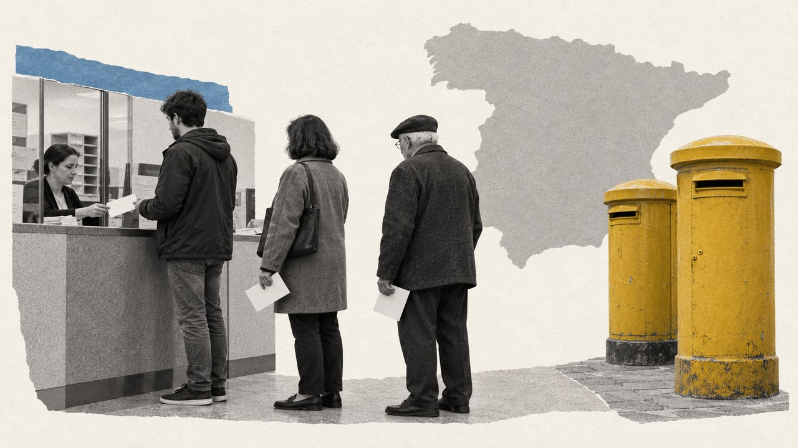

Actualidad · Votar desde casa · España
Siete de cada cien electores pidieron votar por correo en 2023, más del triple que en 2015: en Bizkaia, 14; en Girona, 3
Las dos generales con más voto por correo fueron las de verano, 2016 y 2023. El 29N cae en noviembre, como 2011 y 2019, cuando se pidió mucho menos. Y en 2023 no lo pidieron sobre todo los mayores: lo pidieron los electores de 25 a 44 años y los de las ciudades grandes.
Por Nacho G. del Álamo ·

Cada párrafo lleva una etiqueta: dato (cifra comprobable con las fuentes), patrón (relación que se repite, sin afirmar la causa), hipótesis (explicación posible, sin dos fuentes independientes) o contexto (hechos y declaraciones publicados por otros, enlazados). Cómo verificamos
ContextoDesde el 6 de octubre se puede pedir el voto por correo para las generales del 29 de noviembre, en una oficina de Correos o por internet, hasta el 19 de noviembre. Correos enviará la documentación a casa y el voto se podrá depositar en cualquier oficina hasta el 25 de noviembre, según el calendario que recogió Europa Press. Correos todavía no ha publicado cuántas solicitudes lleva.
ContextoEl voto por correo ha entrado además en la campaña. El mismo día de la convocatoria, Santiago Abascal y la presidenta de la Comunidad de Madrid, Isabel Díaz Ayuso, pidieron votar en la urna, según Europa Press.
«Yo le pido a todo el mundo que ni se le ocurra votar por correo»
ContextoAbascal lo dijo en Antena 3: «Que no voten por correo, les animo a que voten en la urna y que voten con seguridad». Desde Correos respondió en Canarias su gerente de Operaciones, Pablo Iván Rodríguez, a unas palabras de Alberto Núñez Feijóo, según Diario de Avisos: «A nadie le gusta que se cuestione la profesionalidad de los trabajadores, sobre todo cuando hemos demostrado que así ha sido durante todos estos años de democracia».
Un récord de verano
DatoEn las generales del 23 de julio de 2023, la Oficina del Censo Electoral aceptó 2.604.386 solicitudes de voto por correo de electores que viven en España: 7,4 de cada 100. Es más del triple que en 2015, cuando fueron 2,3 de cada 100, y casi el doble del anterior máximo, el de junio de 2016, con 4,2.
PatrónLas dos generales con más voto por correo son las dos que se votaron en verano: la del 26 de junio de 2016 y la del 23 de julio de 2023. Las de noviembre se quedan abajo: 2,0 de cada 100 en 2011, que se votó el 20 de noviembre, y 2,9 en noviembre de 2019.
HipótesisLa explicación más obvia son las vacaciones: en julio mucha gente no está en su casa el día de la votación. Pero no es la única. Entre 2019 y 2023 llegó la pandemia, que pudo acostumbrar a más gente a votar desde casa. Con los datos no se puede separar el peso de cada cosa, y no hay forma de saber cuántos lo pedirán el 29N.
DatoCasi todo el que lo pide, vota. Según Correos, en 2023 admitió 2.471.935 votos por correo, el 94,2% de las solicitudes que había admitido. Fue el porcentaje más alto desde que tiene registros homologados, en 2008.
Bizkaia, Madrid y Álava, arriba; Girona y Tarragona, abajo
DatoEl voto por correo no se reparte igual. En 2023, en Bizkaia lo pidieron 14,0 de cada 100 electores; en Madrid, 12,9; en Álava, 12,2. En la otra punta, Girona, con 3,1, Tarragona, con 3,1, y Cádiz, con 3,5. La provincia mediana se quedó en 7,2.
Ver las 52 provincias
DatoEl salto fue mayor donde más se pidió. En Madrid, la provincia de Ayuso, se pasó de 3,3 de cada 100 en noviembre de 2019 a 12,9 en 2023: casi cuatro veces más. En Bizkaia, de 3,4 a 14,0. En Girona, de 2,1 a 3,1.
PatrónEl mapa se repite elección tras elección: Castilla y León y el País Vasco suelen estar por encima de la media; Cataluña, Murcia, Alicante y Cádiz, por debajo.
No lo piden los mayores
DatoSe suele pensar en el voto por correo como el de las personas mayores que no pueden ir al colegio. En 2023 fue al revés: los que más lo pidieron fueron los electores de 25 a 34 años, 9,3 de cada 100, y los de 35 a 44, 8,8. Los de 75 años o más fueron los que menos: 4,8 de cada 100.
DatoTambién es más urbano. En los municipios de más de 50.000 electores lo pidieron 9,3 de cada 100; en los de menos de 50.000, entre 5,5 y 5,9.
Lo que no dicen estos números
ContextoSon solicitudes, no votos, y se cuentan por la provincia en la que está inscrito el elector. El INE y Correos no cuentan lo mismo: el INE da 2.604.386 solicitudes aceptadas en 2023 y Correos, 2.622.808 admitidas en sus oficinas. Los votos emitidos de cada elección solo están en notas de prensa de Correos, y faltan o son provisionales en 2008, 2011 y 2015. Las cifras no incluyen a los españoles inscritos como residentes en el extranjero, que votan por otro procedimiento.
ContextoQue en una provincia se pida más voto por correo no dice nada sobre a quién se vota. Los votos por correo se meten en la urna de la mesa de cada elector y se cuentan con los demás: no se pueden separar en los resultados.
PatrónLo que sí dicen es que el voto por correo dejó de ser marginal en 2023 y que depende mucho de la fecha y del sitio. Ya contamos dónde están los nuevos electores de la ley de nietos y votan desde fuera de España. Puedes ver cuánto se votó en cada sección en el mapa.
Explora el mapa por sección · Más piezas: La ley de nietos
Método y fuentes
- Qué se compara
- Las solicitudes de voto por correo aceptadas por la Oficina del Censo Electoral en las generales de 2004 a 2023, por cada 100 electores residentes en España, por provincia y, en 2023, por edad y tamaño del municipio.
- Límites
- Son solicitudes, no votos, contadas por la provincia de inscripción del elector. El INE y Correos cuentan cosas distintas y sus totales no coinciden. Los votos emitidos solo están en notas de prensa de Correos y faltan o son provisionales en 2008, 2011 y 2015. No incluye a los residentes en el extranjero. Las razones de los cambios (vacaciones, pandemia) son hipótesis. El voto por correo no se puede separar en los resultados.
- Cómo se calcula
- Porcentajes sobre votos a candidaturas, salvo la participación, que es sobre el censo. Cifras reproducibles con los scripts del expediente de la pieza. Metodología de Actualidad · Metodología del Atlas
- Fuentes
- INE, Oficina del Censo Electoral, solicitudes de voto por correo en las elecciones generales de 2004 a 2023 (tablas 59755, 59758, 59759, 59763 y 59764 para 2023)
- Correos, récord histórico con 2.471.935 votos admitidos (22-7-2023)
- Correos, ya se puede solicitar el voto por correo para el 29N (6-10-2026)
- Europa Press, Abascal y Ayuso cuestionan el voto por correo (5-10-2026)
- Diario de Avisos, Correos en Canarias responde a Feijóo (8-10-2026)
- Autoría
- Nacho G. del Álamo
- Revisión de datos y texto
- Nacho G. del Álamo, 25 de octubre de 2026
- Publicado · actualizado
- 25 de octubre de 2026 · 25 de octubre de 2026
- Correcciones
- Ninguna.
Serie «Camino al 29N»: 87 piezas
- Del 12% al 2,9% y de vuelta al 9,5%: el nacionalismo gallego que deja Beiras
- La Barcelona que tendría que reconquistar Colau: los comuns ganaban en 837 secciones y ahora en 23
- El 29N repite mes con mal recuerdo: el último noviembre dejó la participación más baja de la democracia
- Con Puigdemont de candidato, Junts duplica su voto: del 11% en el Congreso al 22% en el Parlament
- Sumados, ERC y los comuns habrían sido la lista más votada en 1.431 secciones de Cataluña en 2023; por separado, en 232
- Andalucía vota casi diez puntos más al PSOE cuando elige al Gobierno que cuando elige a la Junta
- La huelga del 11N apela a los barrios que menos votan: donde más paro hay, la participación cae al 61%
- En Madrid, el PSOE saca diez puntos más cuando se vota al Gobierno que cuando se vota al alcalde
- El espacio a la izquierda del PSOE fue el más votado en 9.810 secciones en 2015; en 2023, en 182
- Vox saca casi lo mismo donde uno de cada tres vecinos nació fuera que donde casi nadie lo hizo
- Tras el saludo gélido de Sánchez en el 12‑O: en Madrid, el PP de Almeida sacó más votos que el de Feijóo, con 85.000 votantes menos
- La aceituna de mesa, por debajo de coste: en sus dos grandes comarcas, el PP no ganó en ninguno de los 23 pueblos en 2023
- Qué provincias pueden decidir el 29N: en 17, el último escaño se resolvió en 2023 por menos de 5.000 votos
- Dónde puede costar más la división a la izquierda: en ocho provincias, Sumar ganó o perdió un escaño en 2023 por menos de 5.000 votos
- Vivienda, inmigración y economía: en el CIS de octubre la vivienda salta del 37,5% al 55,7% y ya es el problema más citado por los votantes de PP, PSOE y Sumar
- Abascal promete pagar las pensiones «como sea», pero Vox saca su peor resultado en los barrios más envejecidos: 9,8%, frente al 16,2% en los más jóvenes
- EAPN presenta su informe sobre pobreza y territorio: en los barrios más pobres se vota 15 puntos menos que en los más ricos, el doble de distancia que en 2004
- Once ministros en las listas del PSOE: con los votos de 2023, el puesto más ajustado es el de Ana Redondo en Valladolid, que caería si el PSOE perdiera el 17% de sus votos
- Ciudadanos se suma a Democracia 21 en Madrid y Barcelona: en los barrios madrileños donde Cs fue más fuerte en 2019, el PP pasó del 18,2% al 49,2% en 2023
- El CEO da a Aliança Catalana hasta 25 escaños: en el Parlament de 2024 sacó el 3,8%, pero el 24,9% en el Ripollès y el 7,8% en los pueblos de menos de 1.000 electores
- Cómo votó tu calle: una de cada cuatro secciones censales eligió en 2023 un ganador distinto al de su municipio
- La calle que parte el voto: el PP sacó el 55,9% a un lado de la avenida de Francia, en València, y el 16,4% al otro
- Madrid llega al 29N teñida de azul: el PP ganó en 1.603 de sus 2.450 secciones y el PSOE solo resiste en cuatro distritos del sur
- Barcelona pasó del amarillo al rojo: ERC ganó en 563 secciones en 2019 y en ninguna en 2023
- València borró a Compromís del mapa: ganaba en 101 secciones en 2019 y en 15 en 2023
- Sevilla tiene dos mapas: el PP ganó en votos el 23J, pero el PSOE fue el primero en 286 de sus 521 secciones
- Zaragoza, empate barrio a barrio: el PSOE ganó en 250 secciones y el PP en 245, y 53 se decidieron por menos de dos puntos
- En Málaga, la renta decide quién vota: el 46,7% en los barrios más pobres y el 80,6% en los más ricos
- Murcia, de verde a azul: Vox ganó en 164 secciones en 2019 y en una en 2023
- Palma, la gran ciudad que menos vota: el 62,5% en 2023, y menos del 35% en algunas secciones del este
- Montse Mínguez dimite y deja la lista de Lleida: el PSC duplicó allí su voto en 2023 y le ganó el cuarto diputado al PP por unos 3.500 votos
- El Rey visita las dos ciudades que menos votan: en Melilla votó el 49,8% en 2023, y en una sección de la periferia, el 19%
- El Senado de 2023: 120 senadores para el PP con un tercio de los votos
- Un diputado cuesta 25.300 votos en Teruel y 97.500 en Madrid: el precio del escaño, provincia a provincia
- 1,9 millones de votos no eligieron a nadie en 2023: en Teruel, Lleida y Soria, uno de cada tres
- Feijóo y Sánchez chocan por las pensiones en un censo con 10,2 millones de electores de 65 años o más: superan a los de 18 a 34 en 49 de las 52 provincias
- El CIS de Tezanos da al PSOE 11,8 puntos de ventaja: en las tres generales desde 2019 sobrestimó su margen sobre el PP entre 1 y 6,9 puntos
- Rufián admite «He fracasado»: con los votos de 2023, ERC y Sumar juntos habrían sacado un solo diputado más en Cataluña, y por 126 votos
- Ocupación: en las provincias con más demandas ante los juzgados, Vox sacó el 15,9% en 2023, frente al 11,5% en las que menos
- Frente Amplio y Podemos solo irán juntos en cinco provincias: en las otras 47, Sumar sacó 26 de sus 31 diputados en 2023
- El Supremo deja sin voto a 163.020 nacionalizados por la ley de nietos: en 2023, el voto exterior ya le dio al PP un escaño del PSOE en Madrid
- PSOE y Frente Amplio, juntos al Senado: con los votos de 2023, su lista habría ganado al PP en 17 provincias donde este sacó tres senadores
- Albiol, cabeza de lista del PP por Barcelona: en Badalona sacó el 55,7% en las municipales de 2023 y dos meses después el PP se quedó en el 16,6%
- Dimite la lista del PSOE en Palencia tras imponer Ferraz a Martínez Seijo: en 2023 al partido le faltaron 7.097 votos para un segundo diputado
- Nueva Canarias, Podemos, IU y Sumar se unen en Canarias: con los votos de 2023, la suma habría pasado de uno a tres diputados
- Separados el 29N, como en 2015: con los votos de aquel año, una sola papeleta de Podemos e IU habría sacado 86 diputados, no 71
- Delgado contra Montero en Madrid: con los votos de 2023, Podemos necesitaría uno de cada cinco votos de Sumar para sacar escaño
- PP y Vox negocian el Senado: con los votos de 2023, sumar a Vox le devolvería a la derecha 19 provincias frente a la lista de PSOE y Frente Amplio
- Trump dice que España fue «invadida»: los vecinos nacidos fuera pasaron de 6,5 a 10 millones en siete años, y donde más crecieron Vox no sacó más votos
- Feijóo y Saiz se pelean por la hucha de las pensiones: donde más pesan en la renta, PP y PSOE se llevaron el 72,8% del voto, casi diez puntos más que donde menos
- Abascal llama a Galicia «espina clavada»: Vox no llegó al 5% en seis de cada diez secciones gallegas en 2023, y en el resto de España, en una de cada nueve
- El 29N deja en el aire la subida de tres millones de empleados públicos: en Teruel o Soria hay el doble por habitante que en Barcelona, y donde más pesan, Sumar sacó un tercio menos
- El Constitucional deja sin voto a los nietos: los españoles adultos de América Latina crecen casi cinco veces más rápido y uno de cada tres está inscrito en Madrid
- En los barrios con más autónomos, el PP saca 13 puntos al PSOE
- Seis escaños que se decidieron por menos de mil votantes
- Vox nunca ha llegado al 12% en los barrios de jubilados
- Vox no gana en los barrios obreros: saca casi lo mismo donde viven peones que donde viven directivos, y el que sube es el PSOE
- Donde abundan los despachos, el PP saca siete puntos más y el PSOE, cinco menos
- Donde más preocupa la vivienda, más se votó a Sumar
- La inmigración preocupa más, salvo a los votantes de Vox
- Donde más preocupa la inmigración, más votó Vox, salvo en Cataluña
- En los barrios de rentistas, el PP saca el 51% y el PSOE, el 21%
- El PP ya gana a Junts en seis de cada diez barrios catalanes
- Sánchez en La Revuelta: entre los hombres jóvenes, Vox casi dobla al PSOE
- CHA se retira en Teruel: la única vez que la izquierda tuvo votos para un escaño fue en 2015, y fue dividida
- Huelva, Almería y Jaén: más de la mitad de sus asalariados cobró en 2024 menos de un salario mínimo al año
- Los 12 millones de la derecha que cita Iván Redondo solo existieron una vez: en 2011
- Feijóo y el aborto «en la pública»: 77% en Galicia, 0,5% en Madrid
- Mota del Cuervo, 1.243 a 1.243: los pueblos del empate y los del voto unánime
- Santa Cruz de Mudela, 874 a 873: los 185 pueblos que se ganaron por un voto
- El otro Clásico: en los barrios de renta media, el PP saca el triple de votos en Madrid que en Barcelona
- Así queda el mapa electoral de España antes del 29N: el PP ganó en 40 provincias y el PSOE, en 10
- Quién va con quién el 29N: Frente Amplio y Podemos, separados en 47 provincias; en 2015, juntos habrían sacado 15 diputados más
- Las provincias que deciden el 29N: 32 escaños se movían en 2023 con menos de 5.000 votantes, y el PP defiende 13
- Un voto en Santa Cruz de Mudela, 101 en Cantabria, 7.097 en Palencia: la semana en que el 29N se contó en márgenes
- Quién vota qué, barrio a barrio: el PP sube 21 puntos donde pesan las rentas del capital, el PSOE 15 donde abundan los peones y Vox solo se mueve con los jubilados
- A seis semanas del 29N: en 534 barrios de España no votó ni la mitad del censo, y tres de cada cuatro están entre los más pobres
- Ante el 29N: del Polígono Sur a la Cañada Real, en 78 de los 93 barrios donde más pesan las ayudas sociales no votó ni la mitad
- Con el PSOE andaluz en mínimos: Sevilla, Jerez y otros 170 municipios que votaron a la izquierda en todas las generales de 1977 a 2008 dieron en 2023 más votos a PP y Vox
- A cinco semanas del 29N: en la calle de los Hermanos García Noblejas, en Madrid, PP y PSOE se cambian de acera 12 veces, y el PP siempre gana en el lado con más renta
- Vox busca el voto de los barrios obreros: en la Región de Murcia, nueve de cada diez secciones pobres ya votan más a PP y Vox que a PSOE y Sumar
- Sevilla vota por barrios y Lugo, mezclada: el índice que mide qué capitales están partidas por el voto
- El voto a Vox de las mujeres jóvenes se ha triplicado desde 2023, y la izquierda ha perdido 13 puntos entre ellas
- El PP saca 6 puntos al PSOE en las encuestas: ni el mayor fallo de la última década, el de 2023, daría el sorpasso que anuncia Iván Redondo
- El PP baja en las cinco encuestas de la semana, pero con Vox sigue sumando mayoría absoluta en todas
- Estás aquíSiete de cada cien electores pidieron votar por correo en 2023, más del triple que en 2015: en Bizkaia, 14; en Girona, 3
- 29N: la corrupción le cuesta votos al PSOE, pero apenas se los da al PP
Más datos: elecciones generales del 29N de 2026: fecha y escaños por provincia · más piezas sobre participación y abstención.
Sigue leyendo
- EncuestasEncuestas de las elecciones generales del 29N: todas, con sus escaños, actualizadas cada día
- Los pueblos de los colonosLos pueblos que levantó Franco votan más a Vox que sus vecinos: en Tiétar, Rosalejo y Pueblonuevo de Miramontes pasó del 25 %
- Del balcón a la cárcelVic dio el 69 % a la Lliga en 1933 y hoy es la gran ciudad de Junts; L'Hospitalet dio el 77 % al Front d'Esquerres de Companys y hoy vota al PSC
- De las barricadas a las urnasMieres votó en masa dieciséis meses después de la revolución: el 86 % fue a las urnas y el 79 % eligió al Frente Popular
- ActualidadTodas las piezas de actualidad
- AtlasAtlas de las anomalías electorales